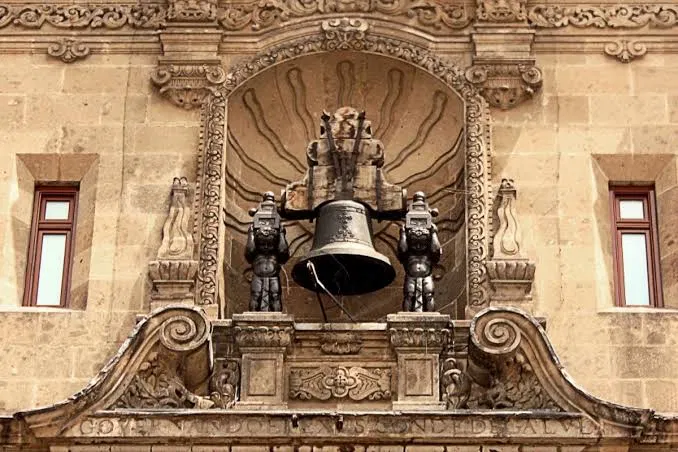

Mitos Comunes
- El Grito no fue por la libertad total: en la madrugada del 16 de septiembre de 1810, Miguel Hidalgo no exigió la independencia absoluta de España. El llamado original fue en defensa de la religión y a favor del rey Fernando VII, bajo la consigna de combatir el "mal gobierno".
- El grito exacto: las crónicas de testigos presenciales señalan que Hidalgo exclamó "¡Viva la religión!, ¡Viva Fernando VII! y ¡Muera el mal gobierno!". La frase "¡Viva México!" se integró mucho después en la narrativa oficial.
- La fecha de la conmemoración: el Grito de Dolores ocurrió en la madrugada del 16 de septiembre, pero la celebración oficial se realiza la noche del 15 de septiembre debido a un decreto de la época de Porfirio Díaz.
